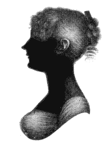
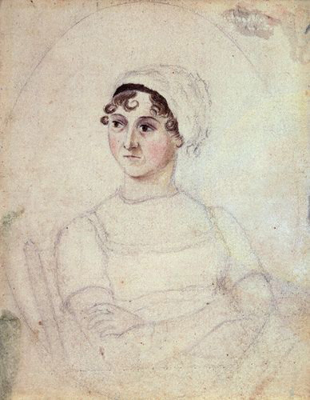
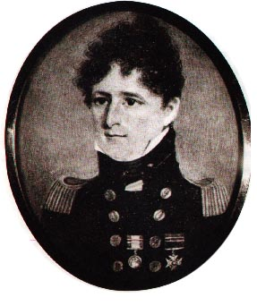
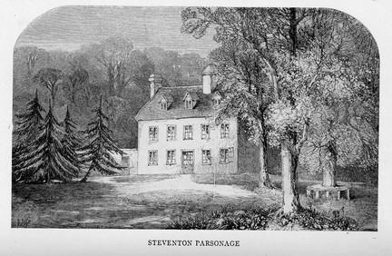
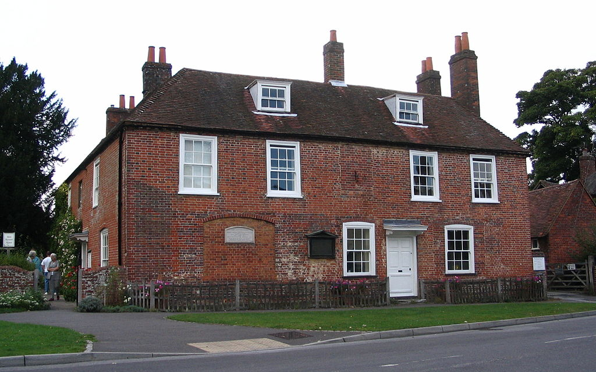
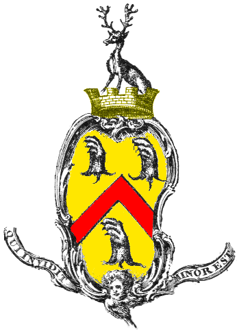
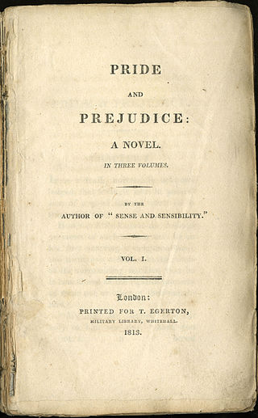

Jane Austen
O pisarce
"Jane Austen (/ˈdʒeɪn ˈɒstɪn/; ur. 16 grudnia 1775 w Steventon, zm. 18 lipca 1817 w Winchester) – angielska pisarka. Autorka powieści opisujących życie angielskiej klasy wyższej z początku XIX wieku. Mimo że sama wiodła stosunkowo odosobnione życie na prowincji w hrabstwie Hampshire, nie pozbawiło ją to zmysłu obserwacji i nie zubożyło dramaturgii jej utworów. Ich fabuła najczęściej dotyczy zamążpójścia i związanych z tym problemów społecznych (sama Austen nigdy nie wyszła za mąż). Reputację dobrej pisarki zyskała już za życia – jej powieści chwalił m.in. Walter Scott."
Źródło: https://pl.wikipedia.org/wiki/Jane_Austen

Galeria:
     Autor strony: Karolina Kacprzycka
Data utworzenia: 2016-11-24